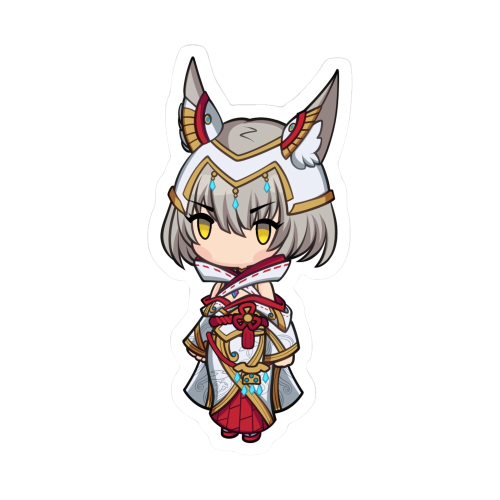

Rex (Japanese: レックス, Rekkusu; ) is the main playable character and the male protagonist of Xenoblade Chronicles 2. He is a Driver who harnesses the power of a Blade named Pyra, also known as the legendary Aegis. Rex devotes himself into protecting her, and together with Pyra, he goes on a quest to find her long-lost home, Elysium. Due to the Aegis' duality, Rex can use the power of the other incarnation of the weapon, Mythra. |
|  | Nia (Japanese: ニア, Nia, Niyah) is one of the main playable characters in Xenoblade Chronicles 2. She is a Gormotti Driver and is accompanied by her Blade, Dromarch, who calls her "Lady" (お嬢様, Ojōsama) like a butler. She comes from Gormott Province. Originally a member of Torna, she defects to Rex's side after Pyra's awakening. |
Tora (Japanese: トラ) is one of the main playable characters in Xenoblade Chronicles 2. He is a Nopon and the creator of the artificial Blade Poppi. Despite being the only party member incapable of being a Driver, he is the only one who can use the various forms of Poppi in battle. Tora joins the party after completing the main quests Artificial Blade Parts 1 and Artificial Blade Parts 2 during Chapter 2. Upon joining the party he is equipped with a common Nopon Mask. |
Mòrag Ladair (Japanese: メレフ・ラハット, Merefu Rahatto, Meleph) is a main playable character in Xenoblade Chronicles 2. She is the Special Inquisitor of the Empire of Mor Ardain. She is a Driver and is accompanied by her Blade, Brighid. She is called "the Flamebringer" (or "the Radiant Young Noblewoman of Flame" 炎の輝公子, Honō no ki kōshi in the Japanese release) and is known as the most powerful Driver in the Empire, serving Emperor Niall, her adopted younger brother and biological cousin. |
His Highness the Crown Prince Ozychlyrus Brounev Tantal (Japanese: ジーフリト・ブリューネ・ルクスリア, Jīfurito Buryūne Rukusuria, Sîvrit Brunet Luxuria), better known as Zeke von Genbu (Japanese: ジーク・Ｂ・極・玄武, Jīku B Arutimetto Genbu, Zeke B Ultimate Genbu), is a Driver and one of the main playable characters in Xenoblade Chronicles 2. He is accompanied by his Blade, Pandoria. They have a pet turtle who they call Turters. Zeke joins the party during Chapter 5, right before embarking to Temperantia. |